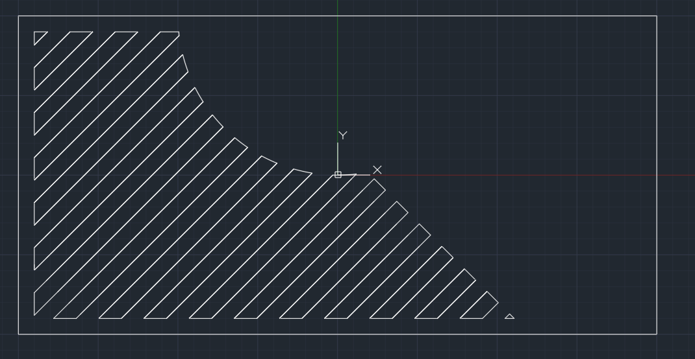
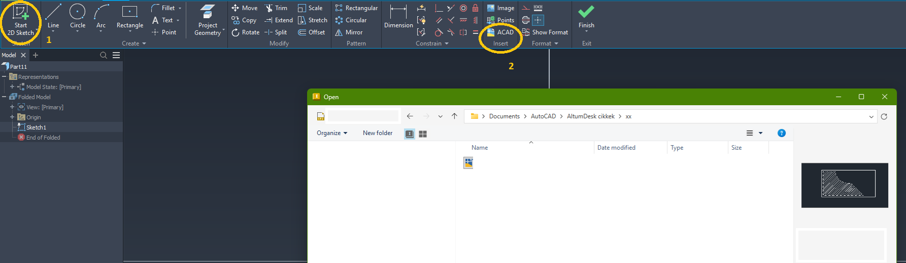
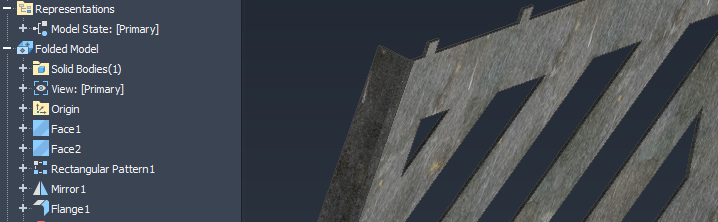
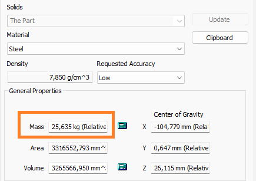
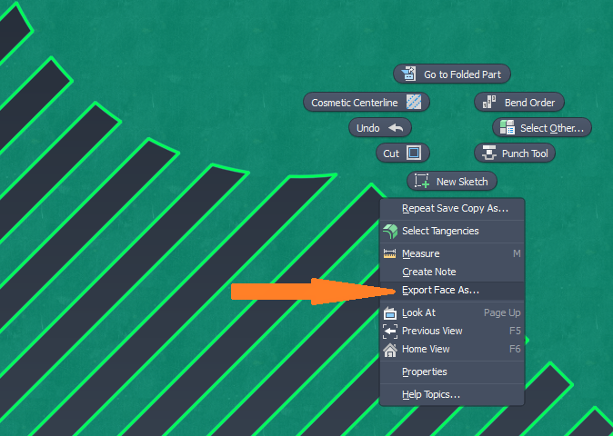
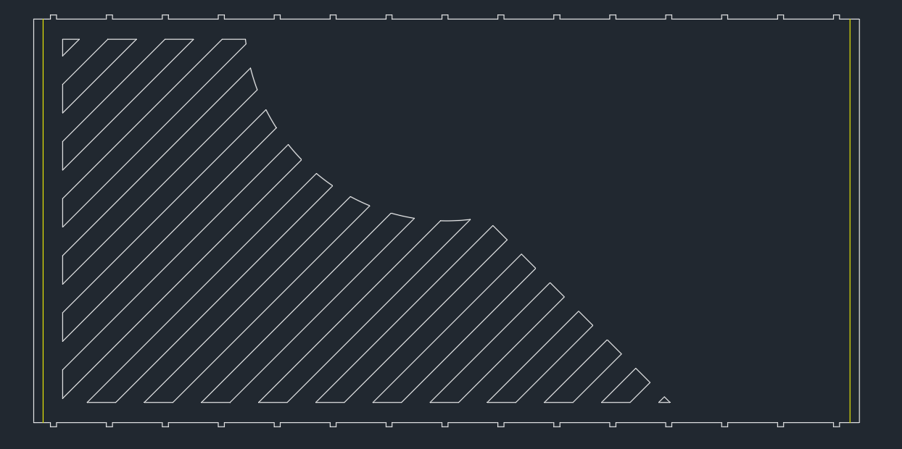

DXF kontúrból Inventor Sheet Metal alkatrész
Ebben a bejegyzésben egy egyszerű CAD-kísérletet dokumentálok. Egy DXF kontúrból indultam ki, ezt Inventorba importáltam, majd Sheet Metal alkatrésszé alakítottam.
1. Kiindulás
A kiindulás egy egyszerű DXF kontúr volt. Érdemes ellenőrizni, hogy a vonalak valóban zárt kontúrt alkotnak-e, nincsenek-e apró hézagok vagy duplikált vonalak.
Ezt első körben vizuálisan ellenőriztem, majd Inventorban a Face paranccsal teszteltem. Ha az Inventor nem ismeri fel a zárt profilt, akkor valószínűleg nyitott kontúr, duplikált vonal vagy hibás csatlakozás van a sketchben.

2. Import Inventorba
Új sketch-et nyitva lehetőség van CAD formátumú fájlok importálására. Import után érdemes ellenőrizni a méreteket és az egységeket.
Ha a kontúr rendben van, a Face paranccsal felületet rendelhetünk hozzá. Ha hézagos vagy problémás a kontúr, nem fog működni a Face, vagy olyan helyeket is kitölthet, amelyeket nem kellene.

3. Sheet Metal modell
Következő lépésként az alkatrészt szerkesztettem: anyagtípust és vastagságot állítottam be, hajlításokat és rögzítő füleket adtam hozzá, majd ellenőriztem a modellt.

4. Ellenőrzés
A végén ránéztem a darab tömegére az iProperties panelben. Ha az anyag és a vastagság helyesen van beállítva, a program térfogat és sűrűség alapján tömeget is számol.

5. Teríték és DXF export
A Flat Pattern létrehozását követően jobb klikk a terítékre, majd
Export Face As....
Ilyenkor azt kell megfigyelni, milyen vonalak kerülnek a terítékre és milyen vonalak nem. Vágáshoz általában tiszta kontúrra van szükség. Ha például hajlítási vonalakra is szükség van gravírozott formában, azt külön ellenőrizni kell export előtt.


6. Tanulságok
Ez egy egyszerű, mégis érdekes folyamat, ami bemutatja, hogyan lehet egy DXF-et újra formázhatóvá alakítani.
- a kontúr legyen zárt és tiszta;
- Inventorban az egységek helyesen legyenek beállítva;
- a darab anyagtípusa és vastagsága legyen ellenőrizve;
- az exportnál figyelni kell, mi kerül a terítékre és mi nem;
- a végső ellenőrzés nem kihagyható lépés.
Ami talán a legfontosabb: ellenőrizni kell a méreteket, vastagságokat, hajlítási sugarakat, gyárthatóságot és minden olyan szempontot, ami számításba jöhet.